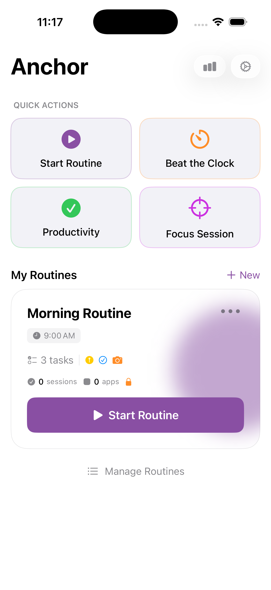
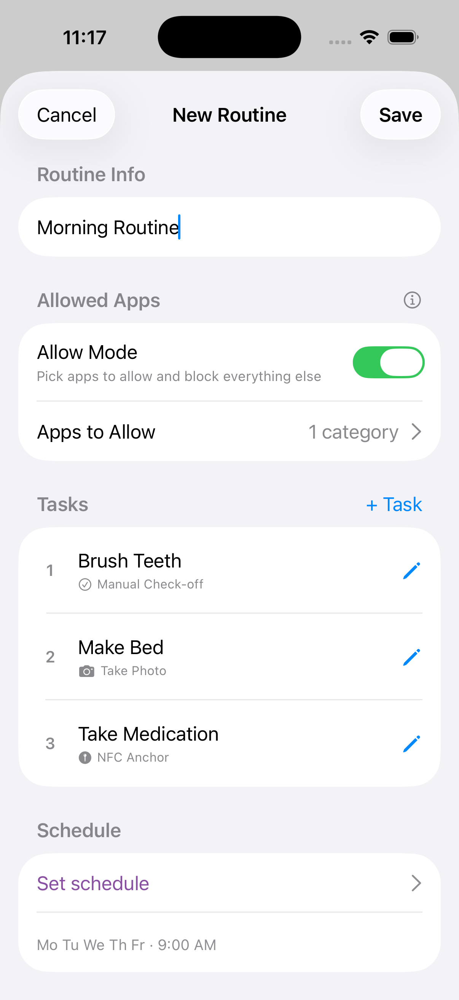
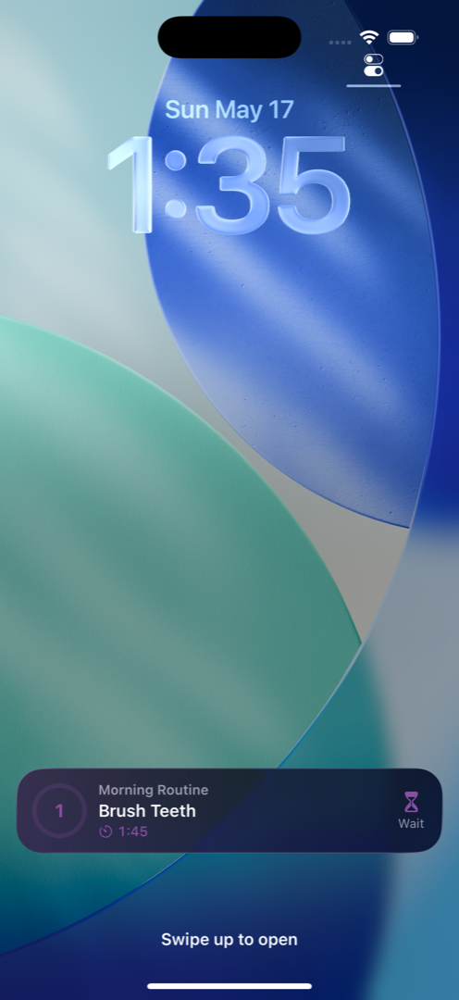
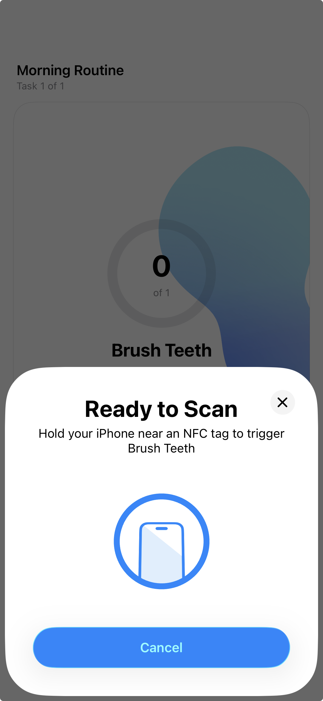
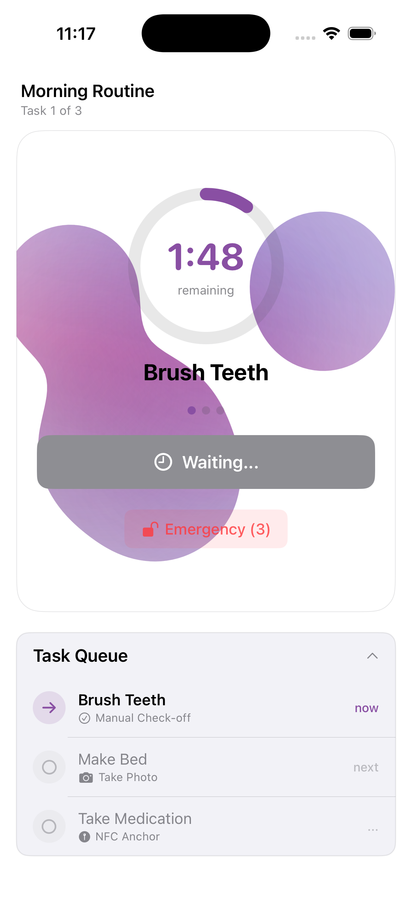

Love your phone? Good. Complete your morning routine, then scroll guilt-free. Anchor makes your favorite apps the reward for following through.
Five minutes to set up. After that, anchors give you somewhere to go — and the rest usually follows.
Get Early Access (Free)Free on iPhone · No account required
Available through Apple's TestFlight — a safe, free way to try apps before they hit the App Store. Setup takes 30 seconds.

Stop fighting your phone. Start using it as motivation.
Three steps to guilt-free phone time
Build a sequence of tasks for your morning, workout, bedtime, or any habit you want to establish.

Choose when routines start, and place your anchors where tasks happen. Put the anchor inside the closet, not on your nightstand — the point is to get you there, because once you're there, getting dressed is obvious.

Go to your anchor, tap or scan, and your favorite apps unlock. That's it — you showed up for yourself.

Simple tools that turn your phone into motivation
Ordered tasks that build consistency. Complete each step before moving to the next.
Anchors, QR codes, timers, and photos all verify you completed each task.
You pick exactly which apps to block. Phone, messages, maps, and anything you whitelist are never touched. Finish your routine and the blocked apps unlock automatically.
Try to open Instagram before your routine is done? A block screen appears instead, showing your progress and how close you are to unlocking it.
Build streaks and celebrate your consistency — then reward yourself with guilt-free scroll time.
See your routine progress right on your Lock Screen — no need to open the app.
Physical destinations that pull you toward action
We call them Anchors — small tags and printed codes you place where tasks happen. They're not surveillance. They're destinations. Sometimes just getting there is the hard part.

A routine in progress — each task verifies its own way.
Place an anchor where the task happens — closet, bathroom, gym bag. Walk there, tap, and the rest usually follows.
Most PopularPrint free anchors to scan with your camera. Stick one anywhere you want to anchor a routine — office desk, kitchen, journal cover.
FreeSet a minimum time for tasks like meditation or reading. Timer ensures you complete the full duration.
Time-BasedSnap a photo as proof of completion. Great for cleaning, cooking, or visual tasks.
Visual ProofThe hardest part is starting
Reminders tell you what to do. Anchors give you somewhere to go.
There's a difference between "I should get dressed" and "I need to walk to my closet." One is a mental battle. The other is just movement.
Place an anchor where the task happens — inside the closet, not on the nightstand. When your routine starts, you have a destination. Walk there, tap, and the rest usually follows.
That's why your screen time feels guilt-free. You didn't just check a box. You showed up.
Some days are harder than others. Anchors don't judge — they just give you a place to go. That's often enough.
Everything you need to know about Anchor
Reminders tell you what to do. Anchors give you somewhere to go. There's a big difference. "Get dressed" is a mental battle. "Walk to the closet and tap" is just movement. Once you're there, getting dressed becomes obvious. Anchors turn tasks into destinations.
Not at all! We love our phones too. Anchor isn't about reducing screen time — it's about making your screen time feel earned and enjoyable. Do what matters to you, then scroll without the guilt.
When you create a routine, you choose exactly which apps to block — like TikTok and Instagram. Essential apps (phone calls, messages, maps, banking) are never touched. Blocking uses your iPhone's built-in Screen Time, so it works system-wide and can't be easily bypassed. Finish your routine and everything unlocks automatically. Need an app urgently? There's always an emergency override — it just takes a few extra taps to give you a moment to reconsider.
No — QR anchors, countdown timers, and photo verification are all free and built in. NFC tags (for tap anchors) are an optional purchase if you prefer tapping to scanning. They're widely available online for around $0.25 each, and any NTAG213 or NTAG215 compatible tag works.
Yes. Your routines, habits, and completion data stay on your device. Anchor doesn't require an account and doesn't send your personal habit data to any servers. What you do with your time is your business.
Blocking uses your iPhone's built-in parental controls (Screen Time), which are designed to be very hard to bypass. You always have an emergency override — you're an adult — but it takes a few extra taps, giving you a moment to reconsider. Even if you delete Anchor, the blocking stays active until you remove it in Settings.
Yes! All core features work offline. Your routines, anchors, and app blocking all function without an internet connection. Anchor is designed to work reliably wherever life takes you.
Anchor works on any iPhone with iOS 17 or later. Tap anchors require iPhone 7 or newer (for NFC reading). Lock screen progress works best on newer iPhones but isn't required.
TestFlight is Apple's official app for trying new apps before they launch publicly. It's free, safe, and made by Apple. You download TestFlight from the App Store, tap our link to install Anchor, and you're done — takes under a minute.
Yes — you pick exactly which apps to block when you create a routine. Phone calls, messages, maps, banking, and anything else you whitelist are never touched.
Your blocked apps stay restricted until you complete the routine or use the emergency override. There's no punishment — just try again tomorrow. Anchor doesn't judge.
Not at all. You can create routines for mornings, bedtime, workouts, study sessions, or any time of day. Set up as many as you need.
Anchor is currently iPhone only (iOS 17+). Android support is on our roadmap.
App blocking is enforced by your iPhone's built-in Screen Time, which stays active independently of Anchor. Deleting the app won't remove the blocking — you'd need to turn it off in your iPhone's Settings.